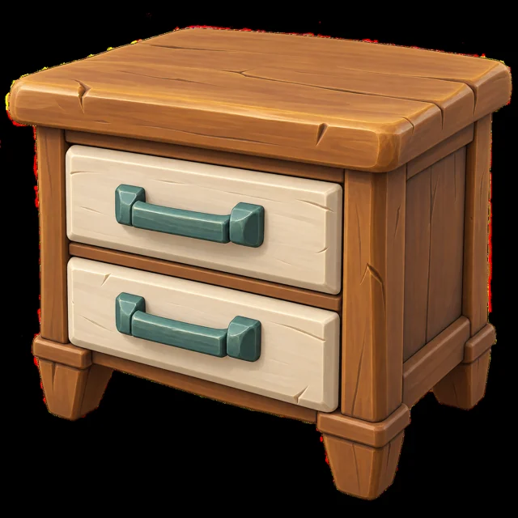
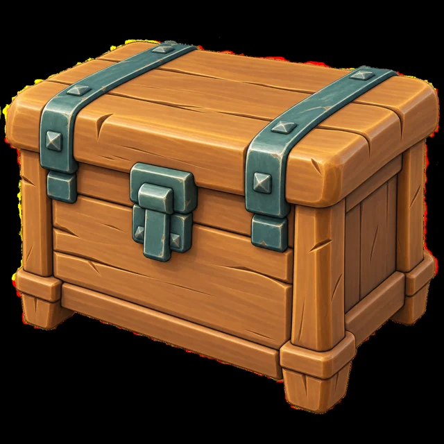
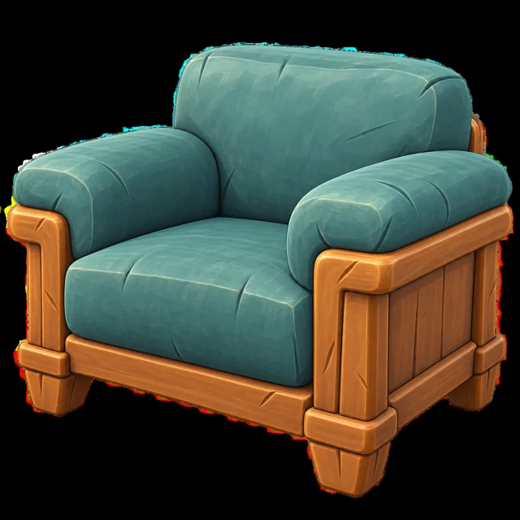

“여긴 우리 집인데?”
물건을 감추고, 길목을 지키고,
동료와 함께 술래의 계획을 꼬아 보세요.
은닉→교란→보호
들키면안 되지!
A LITTLE WILD. A LOT OF TROUBLE.
물건은 감쪽같이. 장난은 대담하게.
작은 동물들과 사람의 커다란 신경전이 시작됩니다.
01 / WELCOME TO THE MISCHIEF
평화로운 별장? 글쎄요.잠깐 비운 사이, 별장은 동물들의 아지트가 되었습니다.
이제 사람은 사라진 물건을 찾고,
동물들은 이 작은 낙원을 지켜야 합니다.
“방금 저 의자, 눈 깜빡이지 않았어?”
배정받은 물건을 별장 곳곳에 감춥니다.
동물마다 다른 재주로 술래를 교란합니다.
술래는 흔적을 읽고, 도구로 대응하며 수색합니다.
02 / MEET YOUR LITTLE TROUBLEMAKERS
작다고 얕보면 큰일.누구로 장난쳐 볼까요?
동물을 선택해 작전을 살펴보세요.
“쉿! 사람이 온다! …사람이 온다!”
높은 곳에서 수색을 지켜보고, 동료에게 위험을 알립니다. 정신없는 날갯짓으로 술래의 시선을 빼앗는 재주꾼.
바닥의 깃털을 따라가 보세요. 새장을 준비하면 더 좋겠죠?
03 / TWO SIDES, ONE BIG MESS
같은 집, 서로 다른 작전.물건을 감추고, 길목을 지키고,
동료와 함께 술래의 계획을 꼬아 보세요.
깃털 하나, 수상한 소리 하나.
작은 단서를 읽고 알맞은 도구로 맞서세요.
동물을 쫓을까, 수색을 이어갈까? 그 선택이 다음 소동을 만듭니다.
04 / A PLACE WORTH GETTING LOST IN
햇볕 든 거실, 삐걱이는 작업실, 벽 너머의 비밀 통로.
사람에겐 익숙한 집이, 작은 동물에겐 거대한 놀이터가 됩니다.
두툼한 소파와 낮은 테이블 사이. 가장 평범한 풍경 속에 가장 대담한 위장이 숨어 있습니다.
05 / LITTLE THINGS, BIG PERSONALITY
이 집의 모든 물건에는 표정이 있다.둥근 모서리. 큼직한 손잡이. 따뜻한 나무.
제작한 가구 샘플에서 시작되는 별장의 개성.



이미지 → 3D 제작에 사용한 원본 이미지입니다. 실제 플레이 화면과는 다릅니다.
NEXT / MORE PLACES, MORE MISCHIEF
따뜻한 집 안에 숨은 작은 비밀들.
물건도 사연도 켜켜이 쌓이는 곳.
숲과 일상이 만나는 새로운 놀이터.
THE HOUSE IS QUIET. TOO QUIET.
어느 편에 설 건가요?
한 팀을 골라 나만의 작전을 확인해 보세요.
개발 콘셉트 프리뷰 · 출시일 및 지원 플랫폼 미정